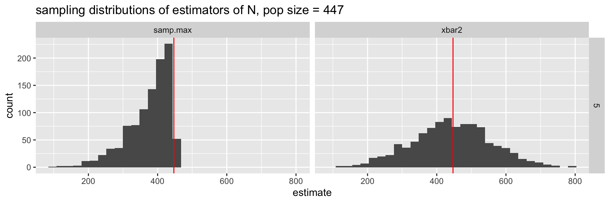

Math 152 - Statistical Theory - Homework 5
Important Note:
You should work to turn in assignments that are clear, communicative, and concise. Part of what you need to do is not print pages and pages of output. Additionally, you should remove these exact sentences and the information about HW scoring below.
Click on the Knit to PDF icon at the top of R Studio to run the R code and create a PDF document simultaneously. [PDF will only work if either (1) you are using R on the network, or (2) you have LaTeX installed on your computer. Lightweight LaTeX installation here: https://yihui.name/tinytex/]
Either use the college’s RStudio server (https://rstudio.pomona.edu/) or install R and R Studio on to your personal computer. See: https://research.pomona.edu/johardin/math152f20/ for resources.
Assignment
Goals:
In this assignment, the fun will include:
- practicing that functions of MLEs are MLEs
- finding statistics with chi-square distributions
- revisiting the tanks
Book problems
- Feel free to do the book problems with a pencil or in LaTeX (RMarkdown supports writing mathematics using LaTeX).
- If you use a pencil, you can take a picture of the problem(s), and include the image(s) using (remove the tick marks to make it work):
Note that myimage.jpeg needs to live in the same folder as the relevant .Rmd file (maybe you called the folder “math 152 hw” and put it on your desktop?)
Saving as jpg, jpeg, png, or pdf should work, but make sure to specify the exact name of the file.
If you have the 3rd edition of the book, the problems will be the same unless they don’t exist – that is, the 4th edition added problems but didn’t change the order of them. Ask me if you want to see the 4th edition problems.
Assignment
1: Community Q
Describe one thing you learned (not from lecture, maybe from working in pairs during class) from a member of the class (student, mentor, professor) – it could be: content, logistical help, background material, R information, etc. 1-3 sentences.
2: 7.6.5
Suppose that \(X_1, \ldots , X_n\) form a random sample from the uniform distribution on the interval [a, b], where both endpoints a and b are unknown. Find the MLE of the mean of the distribution. [Hint: use theorem 7.6.1 in DeGroot & Schervish and problem #6 from HW4.]
3: 7.6.6
Suppose that \(X_1, \ldots , X_n\) form a random sample from a normal distribution for which both the mean and the variance are unknown. Find the MLE of the 0.95 quantile of the distribution, that is, of the point \(\theta\) such that \(P(X < \theta) = 0.95.\) [Hint: use theorem 7.6.1 in DeGroot & Schervish, see problem #4 below.]
4. 7.6.21
Show that the method of moments estimators of the mean and variance of a normal distribution are also the MLEs. (You will need to calculate both the MLE and the MOM for both \(\mu\) and \(\sigma^2\). For MLE, you need derivative wrt \(\mu\) and then, separately, derivative wrt \(\theta = \sigma^2\), two equations and two unknowns.)
5: 7.6.23
Suppose that \(X_1, \ldots , X_n\) form a random sample from the beta distribution with parameters \(\alpha\) and \(\beta\). Let \(\theta = (\alpha, \beta)\) be the vector parameter.
- Find the method of moments estimator for \(\theta\). (The solution is provided because it’s mostly algebra, and the more important question here is part b.)
Solution to a.:
- The expectations of \(X_i\) and \(X_i^2\) (i.e., the first two theoretical moments) are respectively \(\alpha/(\alpha+\beta)\) and \(\alpha(\alpha+1)/[(\alpha+\beta)(\alpha+\beta+1)]\). We set these equal to the sample moments \(\overline{X}\) and \(\overline{X^2} = \frac{\sum_i X_i^2}{n}\) and solve for \(\alpha\) and \(\beta\).
\[\begin{eqnarray*} E[X] &=& \frac{\alpha}{\alpha + \beta}\\ E[X^2] &=& (E[X])^2 + Var(X) = \Bigg(\frac{\alpha}{\alpha + \beta}\Bigg)^2 + \frac{\alpha \beta}{(\alpha + \beta)^2(\alpha + \beta + 1)} \end{eqnarray*}\]
Setting the sample moments equal to the theoretical moments we get, \[\begin{eqnarray*} \overline{X} &=& \frac{\alpha}{\alpha + \beta}\\ \overline{X^2} &=&\bigg(\overline{X}\bigg)^2 + \bigg(\overline{X}\bigg)^2\frac{\beta}{\alpha(\alpha + \beta + 1)}\\ &=& \bigg(\overline{X}\bigg)^2 + \frac{\bigg(\overline{X}\bigg)^2 (1 - \overline{X})}{\alpha + \overline{X}}\\ &&\\ \hat{\alpha} &=& \frac{\overline{X}(\overline{X} - \overline{X^2})}{\overline{X^2} - (\overline{X})^2}\\ \hat{\beta} &=& \frac{(\overline{X} - \overline{X^2})(1-\overline{X})}{\overline{X^2} - (\overline{X})^2} \end{eqnarray*}\]
- Show that the method of moments estimator is not the MLE. (Note: you do not need to actually solve for the MLE, just convince your reader that they can’t be the same.)
6: 8.1.1
Suppose that a random sample \(X_1, \ldots, X_n\) is to be taken from the uniform distribution on the interval \([0, \theta]\) and that \(\theta\) is unknown. How large a random sample must be taken in order that
\[P ( | \max\{ X_1,\ldots , X_n \} - \theta | \leq 0.1 \cdot \theta) \geq 0.95,\]
for all possible \(\theta\)?
7: 8.1.6
For the conditions of Exercise 5, use the central limit theorem in Sec. 6.3 to find approximately the size of a random sample that must be taken in order that \[P(|\overline{X} - p| \leq 0.1) \geq 0.95 \mbox{ when } p = 0.2.\]
8: 8.2.10
Suppose that six random variables \(X_1,\ldots, X_6\) form a random sample from the standard normal distribution, and let
\[Y = (X_1 + X_2 + X_3)^2 + (X_4 + X_5 + X_6)^2.\]
Determine a value of \(c\) such that the random variable \(cY\) will have a \(\chi^2\) distribution.
9: R - Tanks
Consider the tank problem encountered in class. Your task at hand is to provide the best possible estimator for the true number of tanks. Consider the R code below that analyzes two estimators (\(2\overline{X}\) and the maximum of the sample). You should provide an argument (in words but using the evidence collected here) for your choice of estimator using the following information:
- a comparison of at least 5 estimators (of your choice!, add to the two I gave, or replace them and use 5 of your own)
- consideration of sample bias, sample variance, sample median, sample mean, sample MSE
- run the entire analysis twice. Once with a sample size of n=5, once with a sample size of n=100
Hint on the R code: create new estimators one by one by adding them on to the two which I wrote.
- add more functions inside of the
calculate_Nfunction - make sure that you output (output of the
calculate_Nfunction) all of the new statistics - when you
pivot_longerbe sure to get all of the columns. The colon gives a range of columns (which will be fromxbar2tosamp.maxif you add the statistics between them). Ask if this doesn’t make sense.
# a function for calculating the estimates of N based on a sample of size nsamp
calculate_N <- function(nsamp,npop){
mysample <- sample(1:npop,nsamp,replace=F) # what does this line do?
xbar2 <- 2 * mean(mysample) - 1
# add more functions here between xbar2 and samp.max
samp.max <- max(mysample)
data.frame(xbar2, samp.max, nsamp, npop) # output: make sure to include all of your statistics
}
reps <- 2
nsamp_try <- 5
npop_try <- 447
map_df(1:reps, ~map2(nsamp_try, npop_try, calculate_N)) # running the function 2 times. xbar2 samp.max nsamp npop
1 517.8 409 5 447
2 425.8 297 5 447# what do you see?reps <- 1000 # now let's do it for real and save the results
results <- map_df(1:reps, ~map2(nsamp_try, npop_try, calculate_N))
# what do the results look like? let's look at the top 10 rows:
results %>% head(10) xbar2 samp.max nsamp npop
1 615.0 410 5 447
2 647.4 384 5 447
3 439.4 304 5 447
4 526.2 393 5 447
5 428.6 411 5 447
6 375.0 290 5 447
7 509.4 421 5 447
8 542.6 379 5 447
9 430.6 366 5 447
10 335.4 323 5 447# making the results long instead of wide:
results_long <- results %>%
pivot_longer(cols = xbar2:samp.max, # a range of columns (from xbar2 to samp.max)
names_to = "estimator", # the column names will go into a new column called estimator
values_to = "estimate") # the values will go into a new column called estimate
# how is results different from results_long? let's look at the top 10 rows:
results_long %>% head()# A tibble: 6 × 4
nsamp npop estimator estimate
<dbl> <dbl> <chr> <dbl>
1 5 447 xbar2 615
2 5 447 samp.max 410
3 5 447 xbar2 647.
4 5 447 samp.max 384
5 5 447 xbar2 439.
6 5 447 samp.max 304 results_long %>%
group_by(nsamp, npop, estimator) %>%
summarize(mean = mean(estimate), # calculating the evaluation metrics, do you
median = median(estimate), # understand these lines of code?
bias = mean(estimate - npop),
var = var(estimate),
mse = (mean(estimate - npop))^2 + var(estimate))# A tibble: 2 × 8
# Groups: nsamp, npop [1]
nsamp npop estimator mean median bias var mse
<dbl> <dbl> <chr> <dbl> <dbl> <dbl> <dbl> <dbl>
1 5 447 samp.max 374. 392 -72.6 3897. 9173.
2 5 447 xbar2 443. 443 -3.60 12945. 12957.results_long %>%
ggplot(aes(x = estimate)) +
geom_histogram() +
geom_vline(aes(xintercept = npop), color = "red") +
facet_grid(nsamp ~ estimator) +
ggtitle("sampling distributions of estimators of N, pop size = 447")